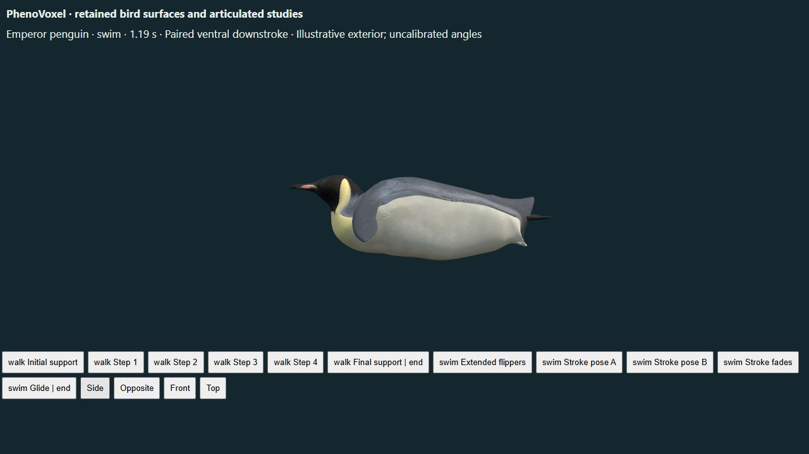
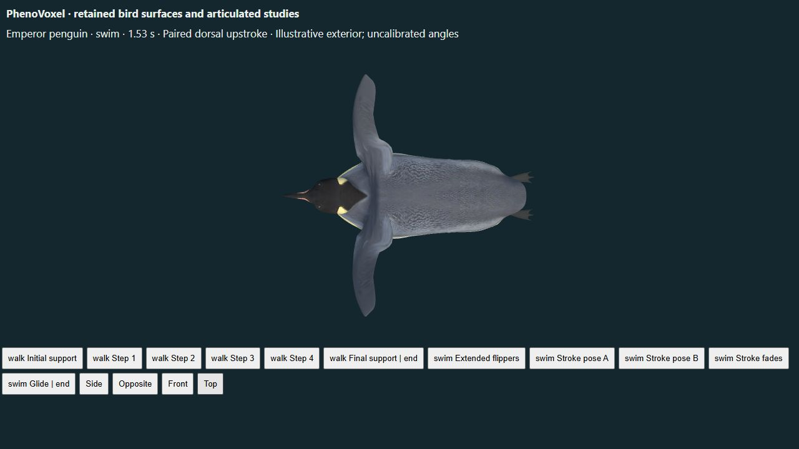

Interactive emperor penguin | Previous shoulder correction
A continuous bend replaces the stretched underwater neck transition. The standing exterior, skin weights, original texture images, UVs, joints and animation curves are retained. Only the underwater neck shape and adjacent surface normals change. Body/shoulder contour and foot-morph limitations remain; this is an illustrative external posture, not validated cervical anatomy or physiology.


The indexed Figure8 caption in Kooyman et al.1971 describes a tucked underwater head. The original PDF figure was not accessible. Paul Nicklen's Ross Sea ascent photograph was inspected for silhouette context, not used as texture or a measurement. A single ascent photograph does not establish every swimming posture.
The existing active cycle uses the1.47Hz reference from nine free-ranging emperor penguins in Sato et al.2010. All curve dimensions, joint angles and the eight-second display sequence remain authored. These checks do not validate forces, oxygen use, cervical joints or whole-animal physiology.
The initial narrow curve was rejected after triangle-orientation screening found folds. The wider final curve is checked for fold regression, material-boundary continuity, unchanged standing/walking surfaces, retained images/UVs/weights, rigid outer flippers, seek/reset behavior and downloadable-clip correspondence. File validation checks glTF conformance only.
Remaining: body/shoulder contour and foot-posture limitations. 186 unavailable biological processes remain labeled across the archive. The twelve DigitalLife additions and flatback movement studies received a separate sampled surface audit; edge ratios are graphics diagnostics, not biological skin strain.
Artist exterior: Marcel Porsiel, CC BY-NC4.0. Original assets remain intact. Download derivative · File validation